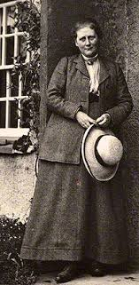

Beatrix Potter was born on July 28, 1866 in South Kensington in London, Engalnd. Throughout her life, she was a writter, illustrator, natural scientist and conservationalist. She was best known for her work, Peter Rabbit.
Picture of Beatrix Potter
Here is a link to my index file.